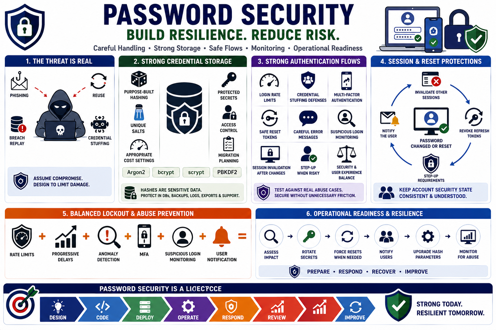

Course Summary
Connecting to LMS... Progress: in progress

Narration
Password security depends on careful handling, strong storage, safe reset flows, monitoring, and operational readiness. Passwords are still widely used, and attackers continue to exploit phishing, reuse, breach replay, and credential stuffing. Developers should assume that some credentials will eventually be guessed, stolen, reused, leaked, or exposed, then design systems to limit the damage.
Strong credential storage uses purpose-built password hashing, unique salts, appropriate cost settings, protected secrets, access control, and migration planning. Algorithms such as Argon2, bcrypt, scrypt, and PBKDF2 should be used through established libraries. Fast general-purpose hashes and custom schemes should be avoided. Stored password hashes remain sensitive and should be protected in databases, backups, logs, exports, and support workflows.
Good authentication flows add layers around storage. Login rate limits, credential stuffing defenses, MFA, safe reset tokens, careful error messages, suspicious login monitoring, and session invalidation after password changes all reduce risk. These controls should be tested against real abuse cases and balanced against user experience so that security does not create unnecessary lockout or recovery problems.
The final goal is resilience. When credentials are exposed, the organization should know how to assess impact, rotate secrets, force resets when needed, notify users, upgrade hash parameters, and monitor for abuse. Password security is not a one-time implementation detail. It is a lifecycle that spans design, code, operations, incident response, and continuous review.